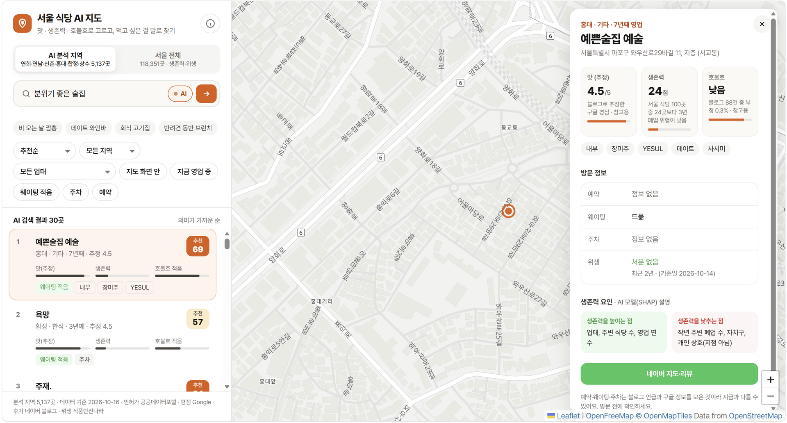
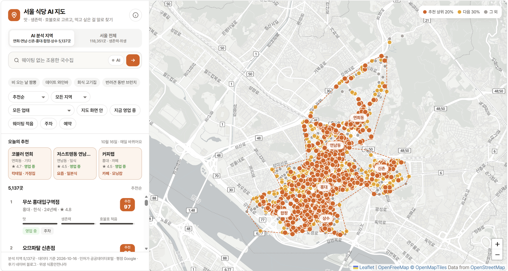
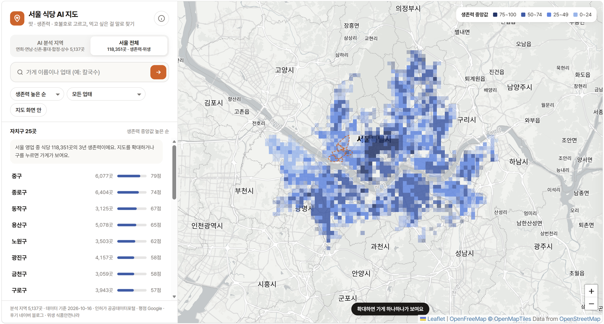

에너지 시스템 AI · 프로젝트 발표
서울 식당 AI 지도
오래 운영됐고, 평이 좋으면서 호불호가 덜 갈리는 식당을
먹고 싶은 말로 찾는 지도
출발점: 교양 ‘세계음식컨텐츠’의 연희동 중식당 지도 → 이번 수업에서 서울 전체와 6개 상권, AI 모델로 확장
상명대학교 전기공학전공 202410929 유지연
01
평점은 쉽게 흔들린다
리뷰 3개짜리 5.0점과 리뷰 1,000개짜리 4.3점, 어느 쪽이 더 믿을 만할까?
02
곧 문 닫을 가게일 수도
서울 일반음식점 인허가 54만 건 중 78%는 이미 폐업했다.
03
원하는 걸 말로 못 찾는다
“웨이팅 없는 조용한 국수집”은 카테고리 검색으로 찾을 수 없다.
서울 식당 AI 지도 · 2
목표
오래 운영하고, 공개된 위생 처분이 없고, 평이 좋으면서 호불호가 덜 갈리는 식당을 말로 찾는다
① 생존력
② 위생 경고
③ 호불호
④ 말로 검색
⑤ 평점 보정
서울 전체
118,351곳
영업 중인 모든 식당의 생존력과 위생 경고. 공공데이터만으로 계산한다.
구 25곳 요약, 확대하면 가게 하나하나
연희·연남·신촌·홍대·합정·상수
5,137곳
생존력·위생에 호불호, 말로 검색, 평점 보정, 맛 점수 추정까지 모든 기능.
구글 평점은 무료 한도(월 1,000건)를 넘으면 유료이고, 서울 전체 블로그 분석은 100시간 이상 걸려서 구글·블로그 기능은 6개 상권으로 한정했다.
서울 식당 AI 지도 · 4
| 데이터 | 출처 | 규모 | 쓰임 |
|---|
| 일반음식점 인허가 | 공공데이터포털 | 서울 539,850곳
영업 중 118,351곳 | 생존모델 학습, 서울 전체 지도 |
| 행정처분 | 식품안전나라 API | 서울 372건 | 위생 경고 |
| 장소 정보 · 리뷰 | Google Places API | 상권 750곳 평점, 리뷰 1,448건 | 평점, 감성 정답, 영업시간 |
| 블로그 글 | 네이버 검색 API | 1,472,996건 수집 | 호불호, 키워드, 예약·주차, 맛 추정 |
구글 리뷰·인기 시간대·네이버 리뷰는 크롤링하지 않고(약관 위반) 블로그 검색 API로 대신했다. 구글은 무료 한도(월 1,000건) 안에서만 써서 평점이 있는 가게는 일부다.
서울 식당 AI 지도 · 5
전체 흐름
계산은 Python에서 미리, 지도는 결과만 보여준다
수집
CSV 1개와 API 3개, 캐시로 이어받기
→
정제
축제 임시 부스 4,500곳, 중복 인허가, 광고 글 제거
→
AI 모델
생존 · 감성 · 검색 · 평점 보정
→
JSON
상권 5,137곳의 점수·검색 벡터와 서울 11.8만 곳 요약 (약 21MB)
→
지도
정적 HTML, 서버 없이 GitHub Pages
AI 검색만 브라우저에서 실행: 질문 문장을 그 자리에서 임베딩해 미리 계산한 가게 벡터와 비교한다.
서울 식당 AI 지도 · 6
① 생존력 · 방법
가게를 1년 단위로 쪼개 “올해 문 닫을까”를 학습
한 가게 = 여러 개의 학습 행
1990년 이후 개업 486,981곳 → 가게-연도 3,455,560행. 오래 운영된 가게의 위험과 해마다 다른 경기(코로나 등)를 따로 볼 수 있다.
모델
LightGBM 이산시간 생존모델, 비교용 Cox 비례위험·단순 규칙
특성
업태, 면적, 영업 연수, 상호 특징, 그해 주변 식당 수, 작년 주변 폐업 수 (약 300m 격자)
검증
2021년까지로 학습 → 2022~2024년으로 평가 (미래 정보 누수 차단)
서울 식당 AI 지도 · 7
① 생존력 · 결과
단순 규칙보다 낫지만, 확률보다 순위로 본다
2022~2024년 1년 내 폐업 예측 AUC
막대는 0.5(무작위)부터 그림
3년 폐업 위험 중앙값
35% → 19%
개업 2년 이하 → 21년 이상. 오래된 가게일수록 위험이 낮게 나와 상식과 맞다.
실제 폐업률 11.1%, 평균 예측 9.4%로 조금 낮게 예측 → 지도엔 “서울 영업 중 식당 중 순위”로 표시
서울 식당 AI 지도 · 8
① 생존력 · 해석
무엇이 가게의 생존력을 높이나
Cox 위험비 (한식 = 1, 1보다 크면 빨리 폐업)
| 요인 | 위험비 | 해석 |
|---|
| 분식 | 1.37 | 37% 빨리 폐업 |
| 경양식 | 1.33 | 33% 빨리 폐업 |
| 중식 | 0.83 | 17% 오래 운영됨 |
| 면적 (로그 1단위 클수록) | 0.83 | 클수록 오래 |
| 주변 식당 수 (로그) | 0.97 | 상권일수록 오래 |
가게별 설명 (SHAP) · 예: 호천식당
생존력을 낮추는 점
상호 길이, 자치구, 개인 상호(지점 아님)
서울 식당 AI 지도 · 9
③ 블로그 정제
블로그 147만 건 중 믿을 만한 30만 건만 분석한다
767,391 ‘가을’ 같은 짧은 상호는 제목 언급만
748,859 분석 지역 주변 지명 포함 (체인 다른 지점 제외)
303,106 가게당 최근 100건까지, 광고·체험단 4.6%와 식당과 무관한 글 2% 제외
체험단 원고 = 같은 가게에 대해 다른 블로거 2명 이상이 거의 같은 문장을 쓴 글 (글자 n-gram 유사도)
서울 식당 AI 지도 · 10
③ 호불호 · 감성분석
모델은 정확했지만, 블로그는 칭찬 일색이었다
구글 리뷰 별점(★4~5 긍정, ★1~2 부정)을 정답으로 다국어 e5 임베딩 + 로지스틱 회귀 → 블로그 글에 적용
0.96
감성분석 AUC
구글 리뷰 1,448건 5겹 교차검증, 부정 재현율 86%
3.0%
블로그 중 부정 글
광고를 걸러도 블로그는 대부분 긍정적
0.17
구글 평점과의 상관
순위상관 ρ, 475곳, 통계적으로 유의하지만 약함
→ 호불호 지수는 추천 점수의 20%만 반영하고, 화면에는 “참고용”으로 표시
서울 식당 AI 지도 · 11
④ 말로 검색 · 키워드
의미 검색에 키워드를 섞어야 잘 찾았다
점수 = 의미 유사도 + 가산점
질문과 가게 블로그 글의 e5 임베딩 유사도에 키워드 일치(+0.012/단어)와 조건 일치(주차·반려견·회식·웨이팅·예약, +0.008)를 더한다.
왜 섞었나
의미만 쓰면 블로그 글이 두루뭉술한 가게가 어떤 질문에든 상위에 올랐다.
키워드
Kiwi 형태소 분석 → TF-IDF → KeyBERT 방식 MMR. 예) 호천식당: 메밀국수, 숯불, 자가제면, 들기름
시험 질문과 상위 결과 (6개 상권 5,137곳 기준)
“회식 고기집”
왕소금구이(연희) · 고기랑(신촌) · 상고집(상수)
“반려견 동반 브런치”
미미에토(연희) · 니바 하우스(연희) · 히포 브런치하우스(연남)
“비 오는 날 짬뽕”
박가네짬뽕(연희) · 짬뽕지존 홍대점(홍대) · 맛짬뽕(상수)
서울 식당 AI 지도 · 12
④ 말로 검색 · 실제 화면
“분위기 좋은 술집”을 검색하면

1위
예쁜술집 예술
홍대 · 맛 추정 4.5(블로그 기반)
의미가 가까운 30곳을 목록과 지도에 함께 표시
e5 모델을 브라우저에서 실행해 서버 없이 동작
서울 식당 AI 지도 · 13
⑤ 평점 보정 · 맛 점수 추정
구글 평점이 없는 가게는 블로그로 맛을 추정한다
구글 리뷰가 10개 이상인 563곳으로 5겹 교차검증: 블로그 감성·글 수·업태·지역·임베딩으로 구글 베이지안 평점을 예측
0.34
+ 블로그 임베딩
순위상관, 평균 절대오차 0.19점 (전부 평균으로 예측하면 0.21점)
→ 개선은 작다: 추정 점수는 구글 평점과 구분해 “블로그 기반 추정”으로 표시
서울 식당 AI 지도 · 14
⑤ 평점 보정 · 방문 정보
리뷰 수를 반영한 평점과, 가기 전에 필요한 정보
베이지안 평점
(20 × 4.44 + n × r) ÷ (20 + n)
4.44 = 분석 지역 평균, n = 리뷰 수, r = 구글 평점
| 리뷰 | 구글 | 보정 |
|---|
| 3개 | 5.0 | 4.51 |
| 1,144개 | 4.2 | 4.20 |
정보가 있는 가게 비율. 블로그에서 캐치테이블·테이블링·네이버 예약·전화·예약 불가 언급을 규칙으로 뽑고 근거 글 링크와 최근 언급일을 함께 표시
폐업 소식 발견
인허가엔 ‘영업 중’이지만 2022년 폐업 기사가 있는 목란, 구글에 ‘영업 종료’인 연희돈멘 → 경고 후 목록 맨 아래
서울 식당 AI 지도 · 15

추천순 · 맛 · 생존력 · 호불호 정렬
지금 영업 중 · 웨이팅 적음 · 주차 · 예약 필터
문장으로 AI 검색
가게별 점수 근거와 예약 근거 글 링크
서울 전체 118,351곳은 생존력으로 보기
분석 방법과 한계를 지도 안에서 공개
데모 · 서울 전체
서울 118,351곳의 생존력을 한눈에

멀리서는 약 500m 격자의 생존력 중앙값
구 25곳을 생존력 중앙값 순으로 요약
확대하면 가게 하나하나와 행정처분 이력
점선 안은 AI 분석 지역 6개 상권
서울 식당 AI 지도 · 17
한계와 배운 점
데이터가 말해 주는 만큼만 말하기
한계
- 인허가 정보만으론 폐업 예측에 한계 (AUC 0.63)
- 블로그는 긍정 편향이라 호불호는 참고용
- 구글 평점은 무료 한도로 일부 가게만, 나머지 맛 점수는 블로그 추정(순위상관 0.34)
- 흔한 상호는 다른 가게 글이 섞임
- 예약·웨이팅 정보는 지금과 다를 수 있음
배운 점
- 끝까지 관찰된 구간만 학습해야 한다: 처음엔 폐업한 가게만 남아 위험이 100%로 나왔다
- 1990년 이전 개업은 폐업 기록이 없어 생존이 부풀려진다 (좌측 절단)
- 정확한 모델도 데이터 편향은 못 고친다: 검증해야 보인다
- 크롤링 대신 공개 API와 근거 링크
서울 식당 AI 지도 · 18
감사합니다
질문 받겠습니다
데이터: 공공데이터포털 · 식품안전나라 · Google Places · 네이버 검색 API · OpenStreetMap